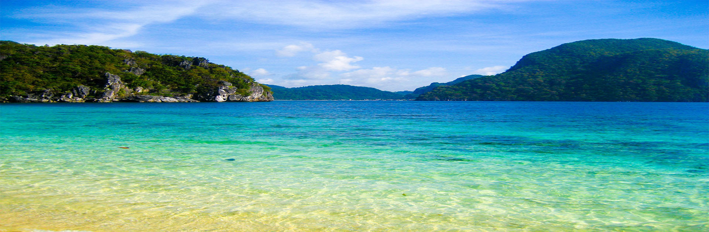
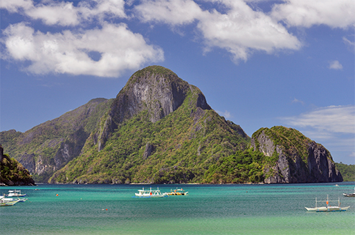
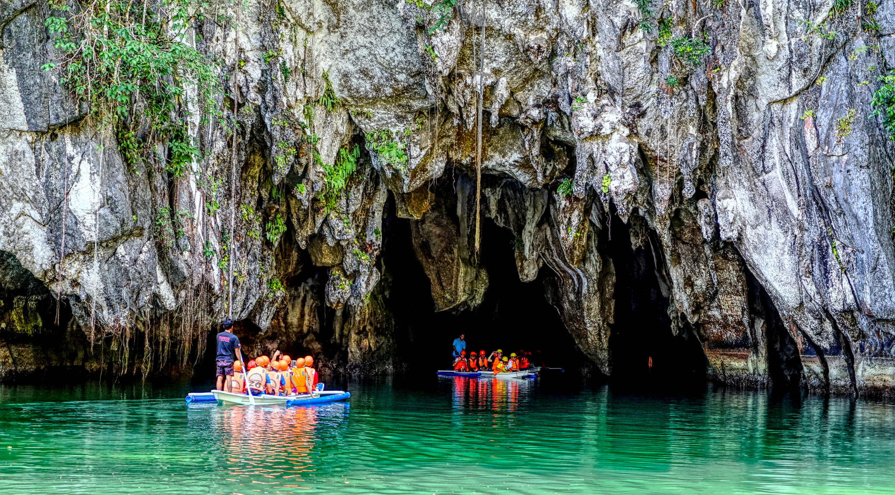
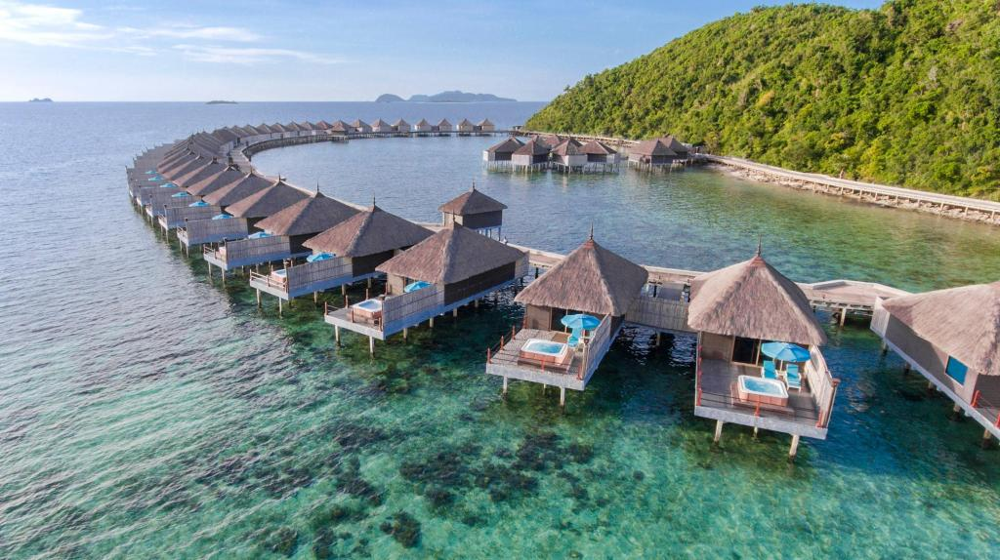

WELCOME TO PALAWAN
Is an archipelagic province of the Philippines that is located in the region of MIMAROPA. It is the largest province in the country in terms of total area of jurisdiction. Its capital is the city of Puerto Princesa, but the city is governed independently from the province as a highly urbanized city.
The islands of Palawan stretch between Mindoro in the northeast and Borneo in the southwest. It lies between the South China Sea and the Sulu Sea. The province is named after its largest island, Palawan Island
Puerto Princesa is the capital of the island province of Palawan. The city has been acclaimed several times as the cleanest and greenest city in the Philippines. With a wide range of attractions ranging from beaches to wildlife reserves, Puerto Princesa is a nature lover's paradise.
Puerto Princesa Subterranean River National Park is a protected area of the Philippines. The park is located in the Saint Paul Mountain Range on the western coast of the island, about 80 kilometres north of the city centre.
El Nido is a coastal settlement and major tourist destination on the Philippines island of Palawan. El Nido comprises 45 islands and islets; limestone cliffs are also found here, which form a Karst backdrop similar to those found in Ha Long Bay, Krabi and Guilin. El Nido is a popular destination for locals during the long holidays of Holy Week but, until recently, has been relatively unknown to foreign tourists. Beaches, clear waters (away from the main town), jungle, steep limestone cliffs and stunning inlets make for beautiful seascapes.
Hidden Beach Secluded locale with towering rock formations, abundant coral & a peaceful, sandy beach.
Coron is a tropical island in the province of Palawan, Philippines that is best known for world-class WWII-era wreck diving, though the area also offers limestone karst landscapes, crystal-clear freshwater lakes and shallow-water coral reefs. Coron also refers to nearby Coron town, a basic transit hub on neighboring Busuanga Island where the airport and most accommodation is located, as well as daytime boat trips that are the only way to visit the tribally-protected island itself. Many visitors travel onwards to the El Nido region.
Photo


